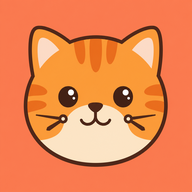

狗狗時光
🐱
貓咪時光
安裝
隨機一汪
篩選
✕
全部
原創
新聞靈感
All Inspiration
原創
新聞靈感
All Characters
All Models
All Dates
‹
›
Su
Mo
Tu
We
Th
Fr
Sa
Clear
狗狗時光
每小時誕生一隻 AI 狗狗 🐾 麻吉、布丁與朋友們的每日冒險
🎮 猜靈感
🗺️ 時光小鎮
📅 本週回顧
📺 電視牆
· 🐾 · 🐾 · 🐾 ·
⏰ 今日時光牆
一格一小時，走完一圈就是一天
↑
狗狗都到齊了 🐾
篩選
角色
隨機
社群
×
‹
›
← 滑動或按鍵切換 →